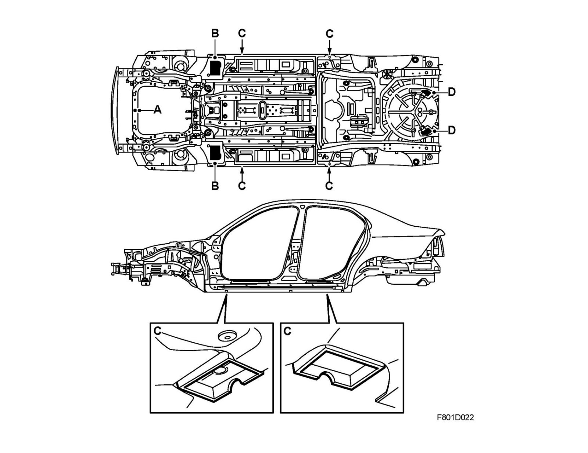
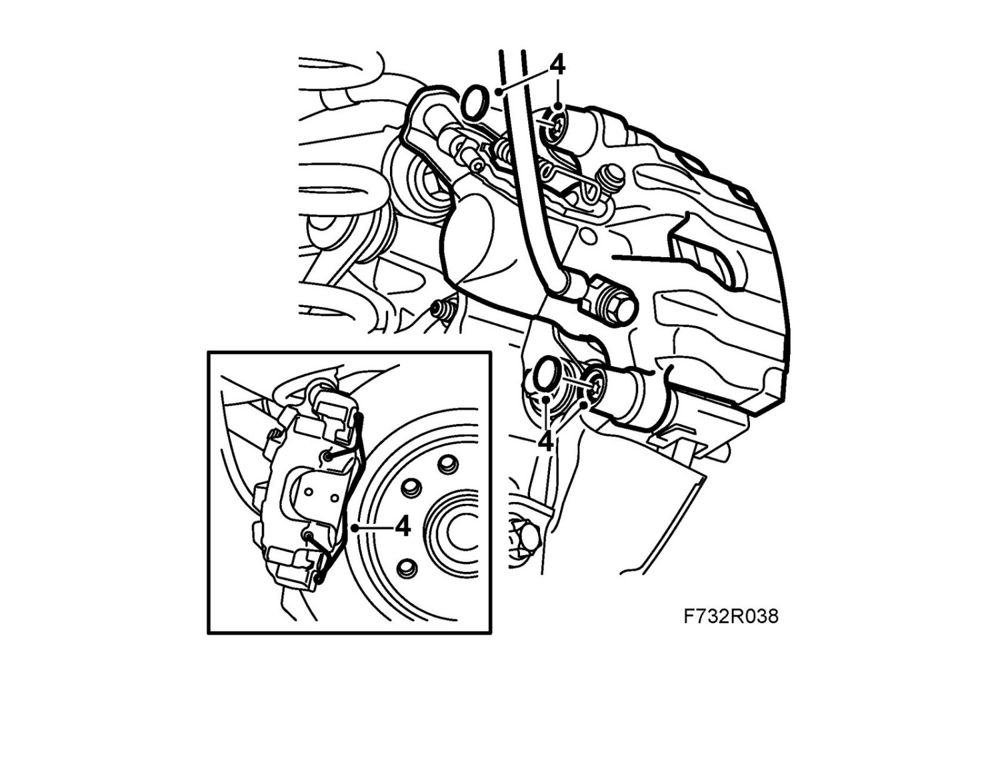
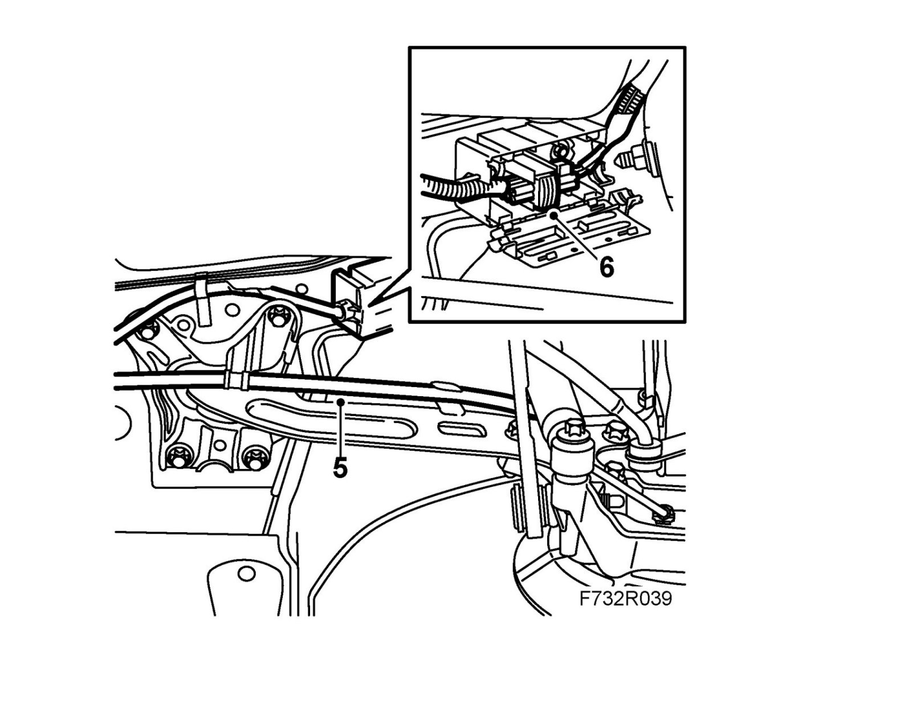
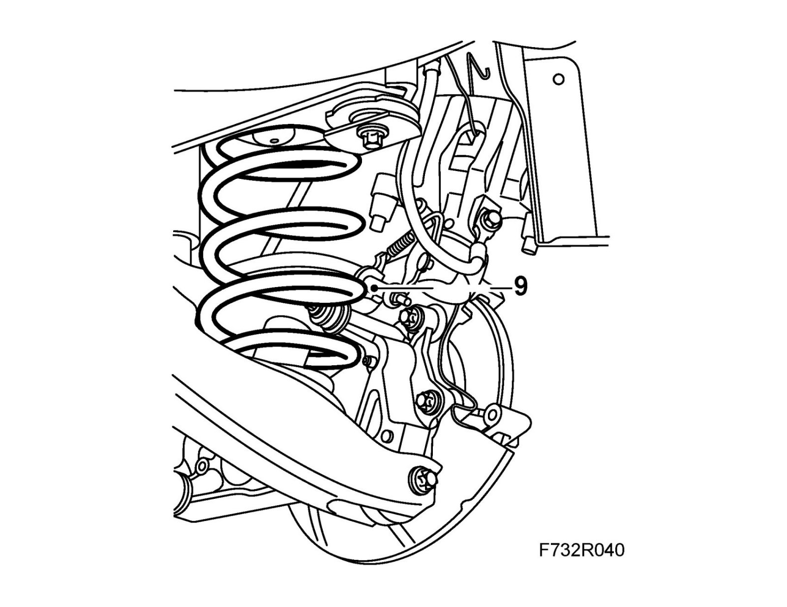
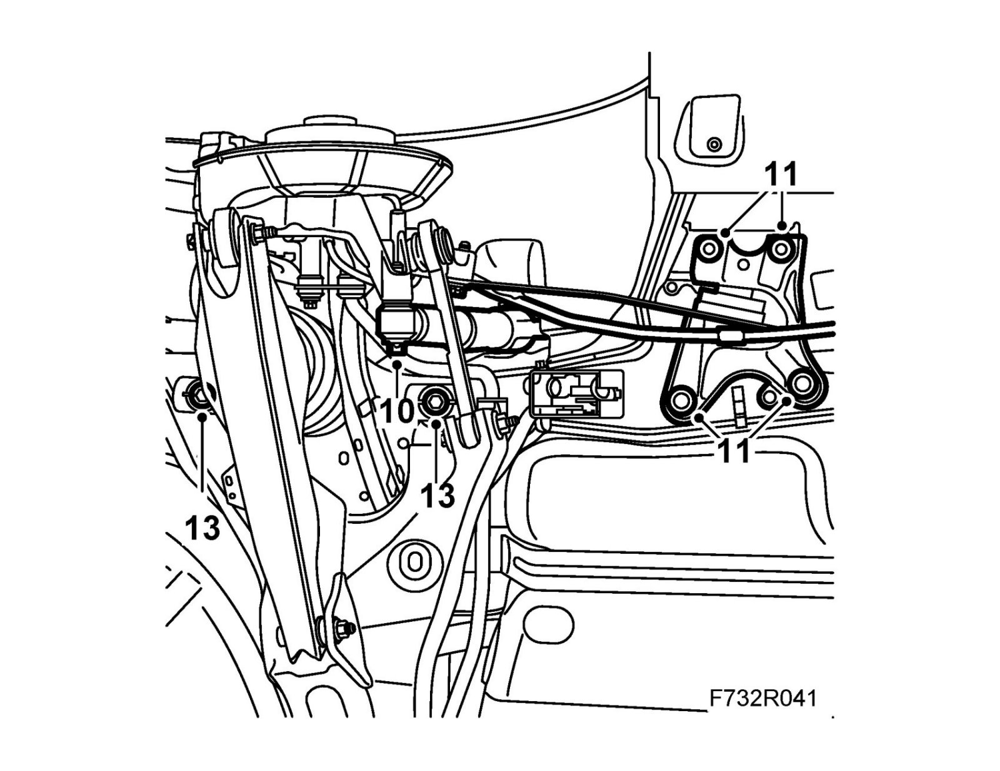
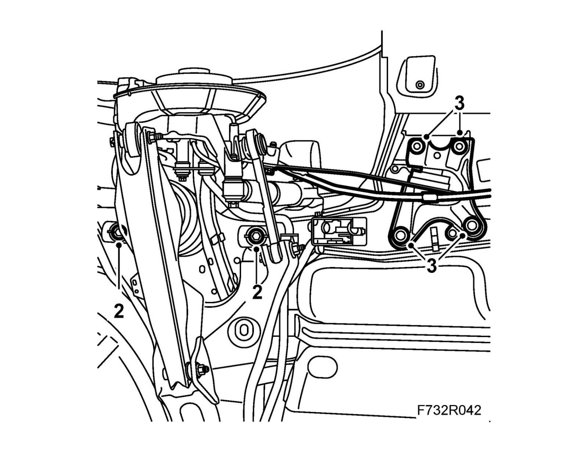
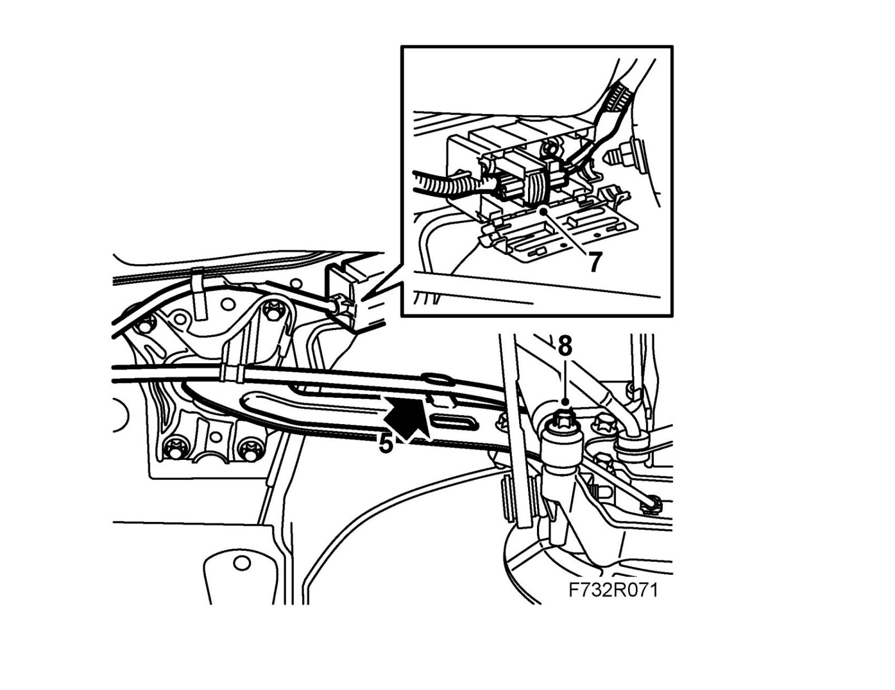
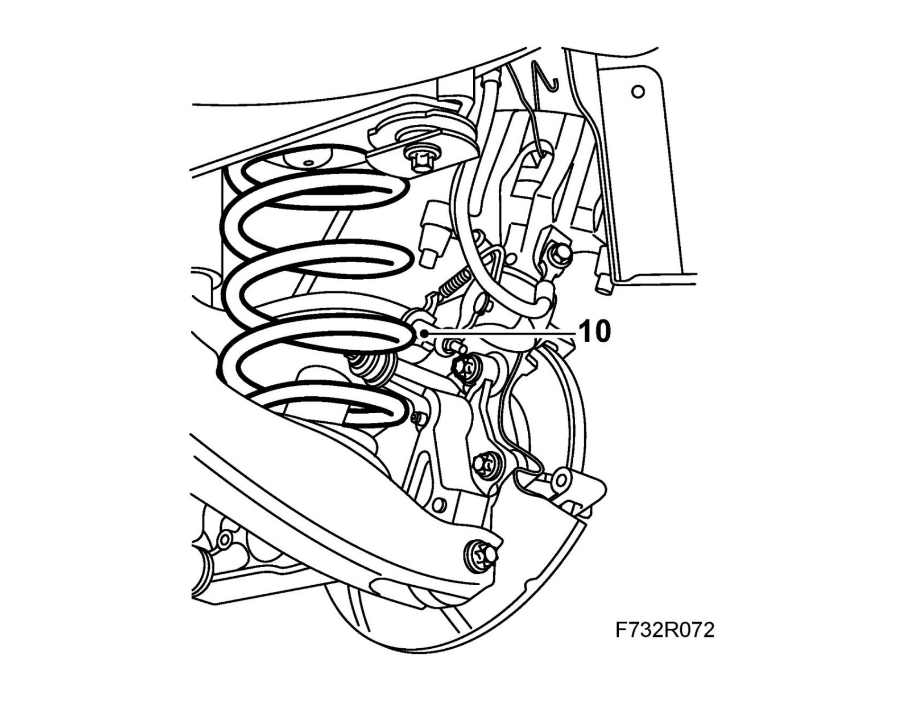
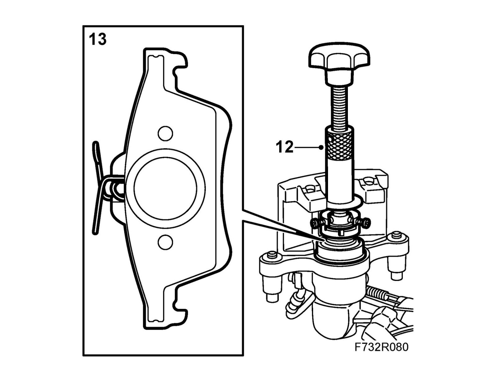
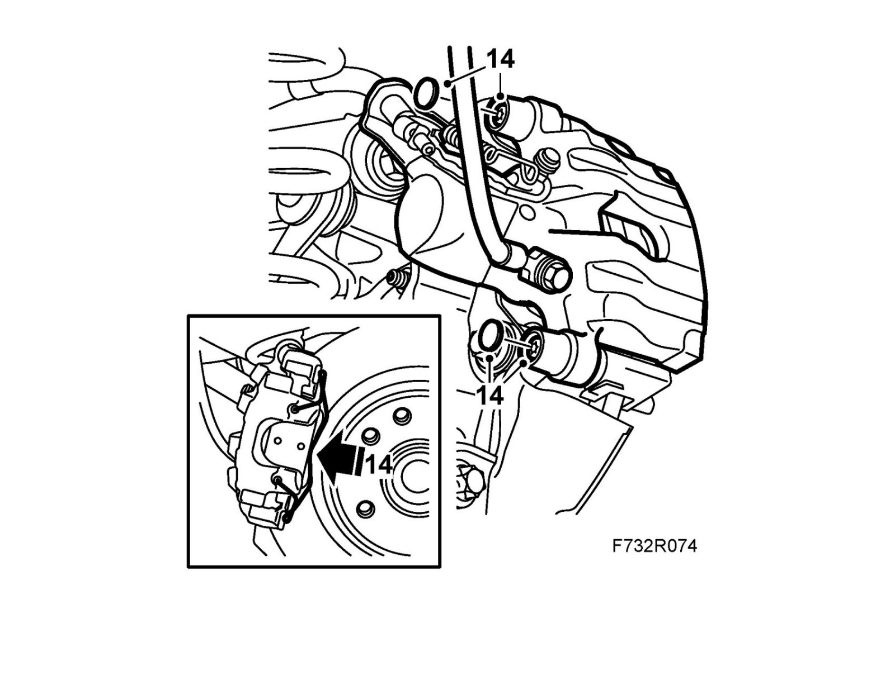

Subframe
SubframeTo remove
1. Raise the car. use the rear jacking points C and the front jacking points B, see Jacking and attaching points.

2. Remove the rear wheels.
3. Cars with tire pressure monitoring: Remove the rear RH wing liner.
4. Remove the spring and the hydraulic bodies, remove the brake pads and suspend the hydraulic bodies on a hook in the brake hose holder on both sides.
Note
Make sure the brake pipe is not damaged.

5. Remove the parking brake cables from the clamps on the longitudinal links on both sides.

6. Open the protective case and unplug the connection for the electrical circuit. Remove the wiring harness from the clip set and suspend it out of the way.
7. For cars with tire pressure monitoring: Remove the connector from the signal detector. Remove and twist away the wiring harness.
8. Cut the exhaust pipe 87 mm in front of the front silencer using 83 95 667 Pipe cutter/exhaust system. Remove the exhaust system. Clean the cut section of burrs and dirt.
9. Compress the spring with a 88 18 791 Spring compressor and the small jaws on one side and lift away the spring.
Change the 88 18 791 Spring compressor over to the other spring and remove it.

10. Clean, lubricate and remove the bolts holding the shock absorber to the steering swivel member.

11. CV: Remove the chassis reinforcement from the rear subframe.
Remove the front longitudinal link attachments.
12. Position the 83 95 311 Trolley lift underneath with 89 96 944 Jig, rear subframe.
13. Remove the bolts holding the subframe to the body.
14. Remove the parking brake cables from their brackets in the body.
15. Make sure that the parking brake cables and the cable network allow the longitudinal link to move freely and lower the trolley lift with the subframe.
To fit
1. Lift the subframe with the 83 95 311 Trolley lift and 89 96 944 Jig, rear subframe.
2. Lift the subframe so that the inner sections of the bushes are pressing against the body. Fit the subframe bolts on both sides.
Tightening torque 75 Nm +135° (55 lbf ft +135°)

3. Fit the longitudinal links and brackets for the parking brake cables to the body.
Tightening torque 70 Nm +90° (52 lbf ft +90°)
4. Lower and pull away the trolley lift.
CV: Fit the chassis reinforcement to the rear subframe.
5. Fit the parking brake cables into their brackets.

6. Cars with tire pressure monitoring: Fit the wiring harness and plug in the connector for the signal detector.
7. Connect and fit the wiring harness into the protective case and close the lid.
8. Fit the shock absorbers to the steering swivel members.
Tightening torque 150 Nm (110 lbf ft)
Note
For correct fitting, see fitting Shock absorber.
9. Fit the spring supports to the spring.
10. Lift the compressed spring into place and remove the spring compressor.
Compress the other spring with the spring compressor and fit the spring support to the spring. Lift the spring into place and remove the spring compressor.

11. Fit the exhaust system and fit a splice (see EPC).
Tightening torque 40 Nm (30 lbf ft)
12. Remove the inner brake pad and screw in the brake piston using 89 96 969 Resetting tool and 89 96 977 Adapter.

13. Fit the brake pads.
14. Fit the hydraulic body.
Tightening torque 28 Nm (21 lbf ft)
Fit the protective covers. Fit the spring to the brake caliper.

15. Repeat steps 12-14 on the other side.
16. Cars with tire pressure monitoring: Fit the wing liner.
17. Fit the wheels.
18. Repeat the steps 11-15 for the other side of the car.
19. Lower the car to the floor.
20. Depress the brake pedal several times to press out the self adjustment of the brake pistons and the parking brake.